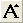
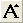
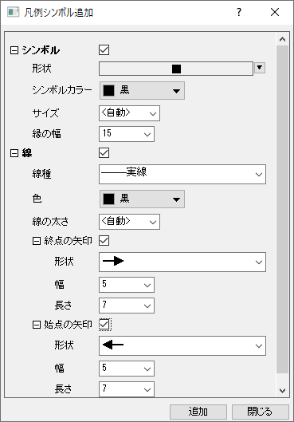
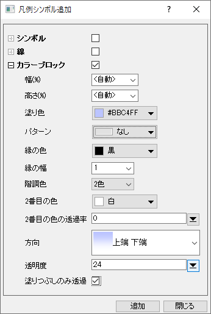

Note:「書式」ツールバー (表示:ツールバーから表示可能)のフォント拡大 、または、フォント縮小  ボタンを使って、選択したテキストラベルのフォントを大きくしたり、小さくしたり、簡単に操作することができます。
ボタンを使って、選択したテキストラベルのフォントを大きくしたり、小さくしたり、簡単に操作することができます。
テキストタブの設定は、グラフ凡例と一般のテキストオブジェクトで共通です。テキストオブジェクトを簡単に編集する場合、このダイアログボックスを開く必要はなく、WYSIWYGテキスト編集の方法で編集できます。グラフ凡例を含む複雑なテキストオブジェクトの編集には、このダイアログの使用が必要です。
オブジェクトプロパティダイアログボックスを開くには:
または
このドロップダウンリストから希望のフォントを選択します。 デフォルトのフォントはオプションダイアログボックスのテキストフォントタブ上のテキストツールグループのフォントコンビネーションボックスで設定されているフォントによって決定されます。
デフォルト:フォント名を選択して、 オプションダイアログボックス中のテキストフォントタブにある、標準フォント ドロップダウンリストで決めたフォントを使います。
希望の値を入力、あるいはこのコンビネーションボックスからポイントで示された希望のフォントサイズを選択して下さい。 デフォルトのサイズは、オプションダイアログのテキストフォントタブ（環境設定：オプション）上のテキストツールグループのフォントサイズコンビネーションボックスで設定されている値によって決定されます。
|
Note:「書式」ツールバー (表示:ツールバーから表示可能)のフォント拡大 、または、フォント縮小 |
このドロップダウンリストで希望の色を選択します。
ラベルを開店するには、このコンビネーションボックスに値を入力して下さい。正の値の場合、ラベルが反時計回りに回転します。 負の値の場合、ラベルが反時計回りに回転します。
LabTalkの相対位置メソッドを使ってテキストオブジェクトが線や矢印のオブジェクトに接続している場合、このコンビネーションボックスに<自動>オプションが追加されます。<自動> を選択すると、接続先の線/矢印オブジェクトが回転したとき、テキストオブジェクトも一緒に回転します。距離計測ツールとアスタリスクブラケット（プロット操作・オブジェクト作成ツールバー）は、デフォルトでこのオプション（<自動>）が有効になっています。
テキストオブジェクト内の行の間隔を調整します。ドロップダウンリストから値を選択するか、キーボードから直接、値を入力します。選択または入力する値は現在のフォント高さの%です。負の値も扱うことができます。
「タブ」を使って複数行のテキストラベルを整列します。 例えば分析結果のテキストを整列するのに使うことができます。
チェックボックスにチェックを付けると、ラベルのテキストの行ごとに別の白い背景を表示します。
このチェックボックスにチェックを付けるとラベルの列を整列します。このオプションは複数列ラベルでのみ使用できます。
このチェックボックスにチェックを付けると、テキスト内に含まれるエスケープシーケンスをそのまま表示します。これは、ラベルにプロジェクトパス(%X)のようなリンクされたスクリプト変数が含まれており、バックスラッシュ文字が含まれている場合に特に有効です。
テキストを左、中央、右に揃えます。1つのラベル内で混在させることはできません。
|
テキストボックスを選択したときに表示されるミニツールバーの整列ボタンも使用可能です。 |
このダイアログボックス中央のテキストボックスに希望のテキストを入力します。 ENTERキーを押すと、改行します。 タブを入力するには、CTRL+TABキーを押します。
テキストをフォーマットするには、テキストボックス上のテキストフォーマットボタン（標準、太字、斜体、下線、上付き、下付き、ギリシャ文字）を使用します。 クリック&ドラッグで希望のテキストを選択します。 希望のフォーマットボタンをクリックして、選択されているテキストにそのフォーマットを適用します。 フォーマットオプションは、埋め込みテキストフォーマットコマンドとしてテキストボックスでは表わされます。 しかし、その下の表示ボックスでは、実際のグラフ上でのテキストオブジェクト表示がWYSIWYG (What You See Is What You Get) で表示されます。
テキストを選択せずに何れかのォーマットボタンをクリックする場合は、Originが現在のカーソルの位置に適当なフォーマットコマンドを挿入します。 そして、テキストが追加されると、選択したフォーマットで入力されます。
テキストオブジェクトや凡例に行のセパレータ（空白）を挿入したい場合、セパレータボタン をクリックします。これにより、 \sep:nnエスケープ シーケンスが編集ボックスに挿入されます。エスケープシーケンスの数値部分で、挿入されたスペースの高さ (フォントの高さの%) です。必要に応じて数値部分を調整します。
をクリックします。これにより、 \sep:nnエスケープ シーケンスが編集ボックスに挿入されます。エスケープシーケンスの数値部分で、挿入されたスペースの高さ (フォントの高さの%) です。必要に応じて数値部分を調整します。
|
このテキストボックスに、4文字のUnicode16進値を直接入力してから、Alt + Xキーを押してテキストオブジェクト文字列に挿入できます。詳細は、FAQ-148 どのようにテキストラベルにギリシャ文字や特殊記号を入力したら良いでしょうか?を参照してください。 |
データラベルツール で作成されたラベルでのみ使用できます。フライアウトを使用して、データラベルの作成で使用する値またはデータセットを指定します。
で作成されたラベルでのみ使用できます。フライアウトを使用して、データラベルの作成で使用する値またはデータセットを指定します。
フライアウトには、頻繁に使用される表記法とシンタックスの例がリストされています。フォーマットの文字列/Labtalkスクリプトを入力することが可能で、必要に応じて、複数表記と任意の固定文字を結びつけることができます。
データラベルツールでプロットにラベル付けも参照してください。
|
軸目盛ラベルに数式を適用している場合、数値表示フォーマットにXまたはYを入力することで、実際のデータ値のかわりに数式によって調整された目盛値を表示できます。例えば、Y軸ラベルの数式を入力している場合は 軸主目盛ラベルフォーマットについてデータラベルを作成するには、 |
凡例シンボル追加ボタン をクリックして、グラフ内のプロットから独立した、散布図や折れ線のシンボルやカラーブロックをグラフ凡例に追加できます（必要であれば通常のテキストオブジェクトでも追加できます）。
をクリックして、グラフ内のプロットから独立した、散布図や折れ線のシンボルやカラーブロックをグラフ凡例に追加できます（必要であれば通常のテキストオブジェクトでも追加できます）。
凡例シンボル追加ダイアログとテキストタブの書式ボタン、テキストボックスを組み合わせ、また、アノテーション、シンボルマップ、変数挿入ボタンを使い、グラフ凡例にカスタムエントリを追加できます。
| シンボルおよび線を追加 | カラーブロックを追加 |
|  |  |
Note: シンボルと線ボックス両方をチェックすると凡例シンボルは シンボルタブの線+シンボルのスタイルに従います。
シンボルマップ ボタンの上でクリックし、Unicode キャラクターをサポートするテキストラベルを挿入するためにシンボルマップ ダイアログを開きます。
変数の挿入 ボタンをクリックして、ワークブックや行列ブックにデータまたはメタデータをテキストオブジェクトに挿入するために 変数の挿入 ダイアログを開きます。
テキストオブジェクトを、オブジェクト、作図、グループ化されたプロット、レイヤ 及び ウィンドウ から適用することが出来ます。
テキストまたは注釈のプロパティをデフォルトとして保存できます。すると、新しいオブジェクトを作成したときに同じプロパティが適用されます。